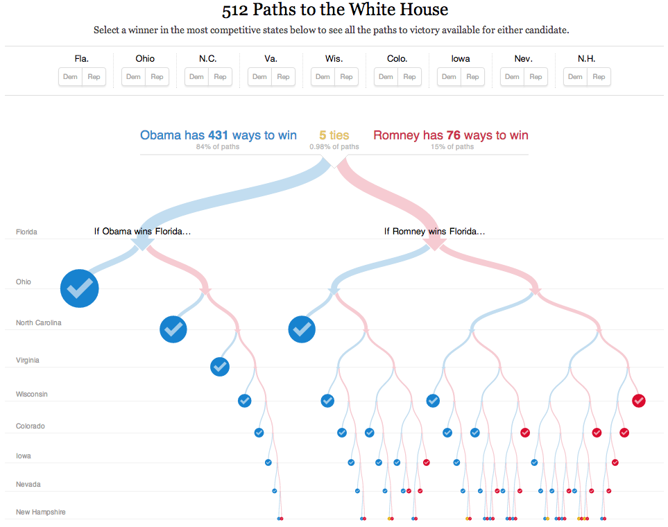
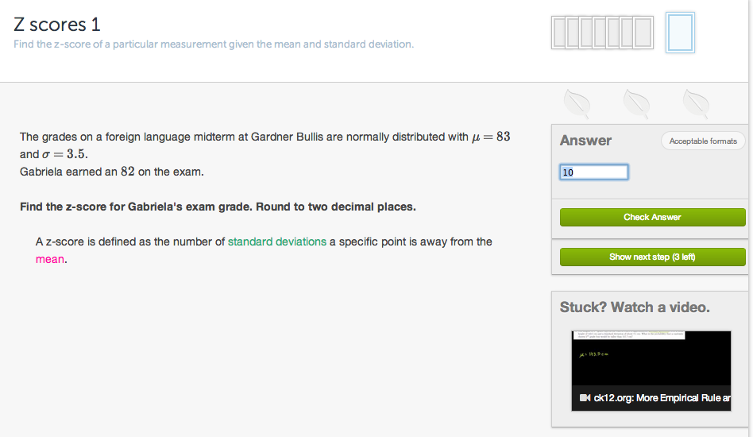
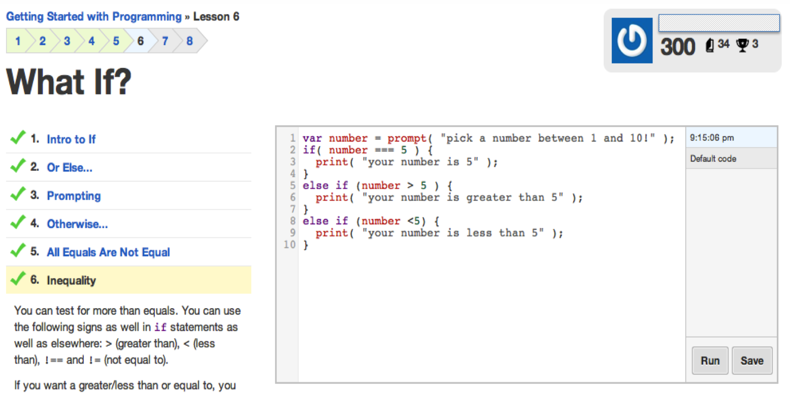

An interactive document is one that allows its readers to explore what-if-scenarios using a graphical interface to control and manipulate parameters underlying the analysis that supports the story. My favorite example of such a document is this interactive visualization published by the New York Times that allows readers to explore different scenarios in the 2012 US Presidential Elections.

Interactivity in a document need not be restricted to just visualizations. An excellent example showcasing use of interactivity is the exercise framework developed by Khan Academy. Instead of presenting students with a static exercise with solutions, the interface shown below allows students to interact with the exercise, seeking hints, watching relevant videos and finally checking their answers with the key. It is clear that such interactivity allows for greater engagement and personalization of the experience for the reader.

Yet another example of very clever use of interactivity is the interface provided by online code tutoring sites like Code Academy and [DataCamp]. It allows users to learn and experiment with code exercises without leaving the comfort of a single page. I strongly believe that such seamless interfaces which combine different learning aids are critical to deliver an effective learning experience.

From the examples presented, it is pretty clear that interactive documents are far superior to static documents. If that were the case, why do we not see interactive documents in domains outside of these. Why do reports we prepare and analyses we carry out end up being static, or in the current best-case scenario as a dynamic document? The answer lies in the fact that creating interactive documents has usually required skills in web development, familiarity with html, css and javascript, which is typically outside the comfort zone of those who prepare such documents.
This tutorial aims to lower those barriers by providing a comprehensive framework to build interactive documents and introducing you to a set of tools that facilitate this process.